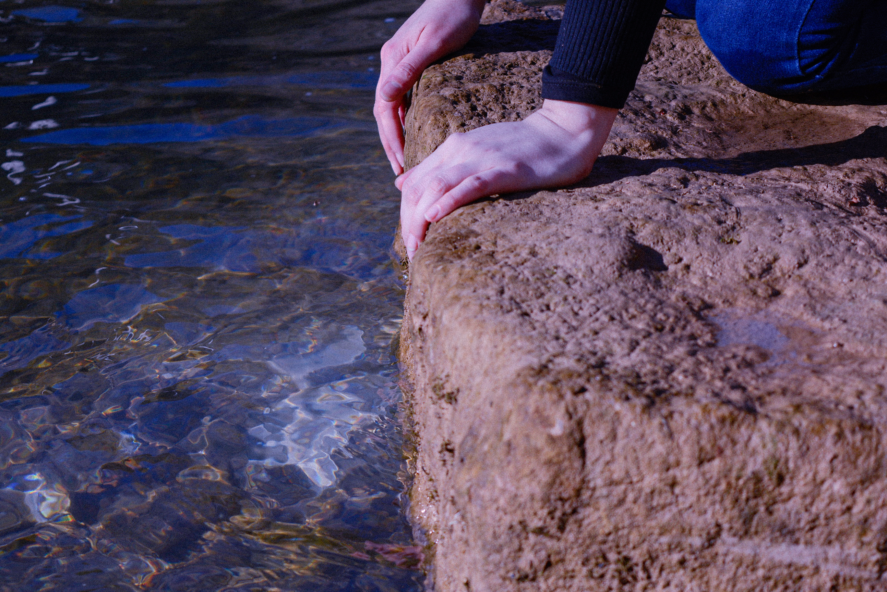
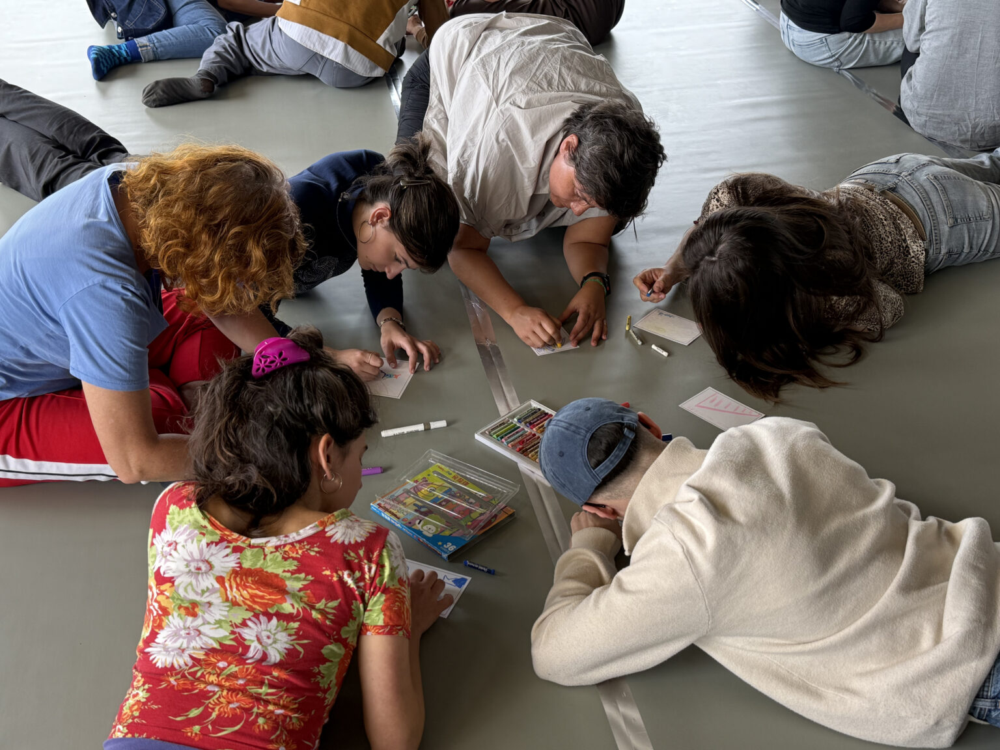
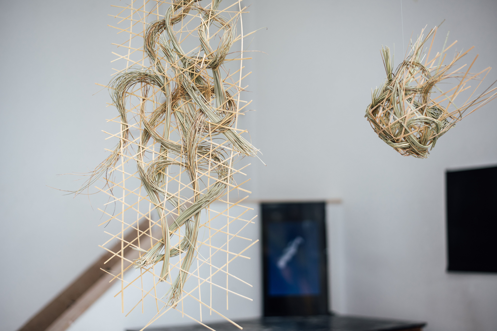
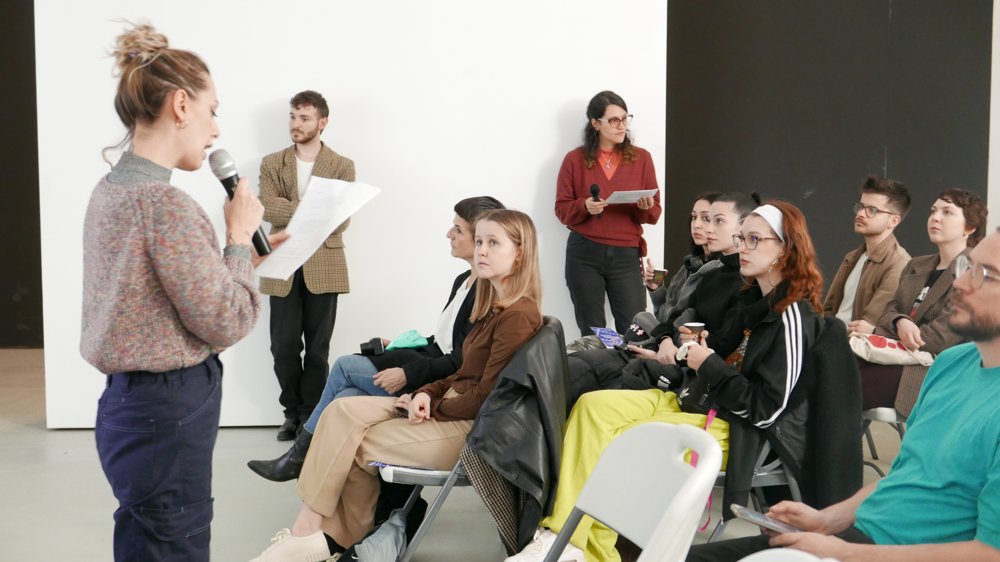
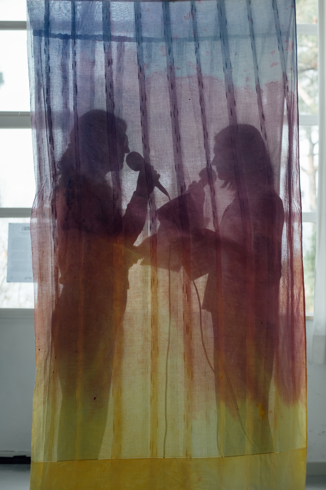
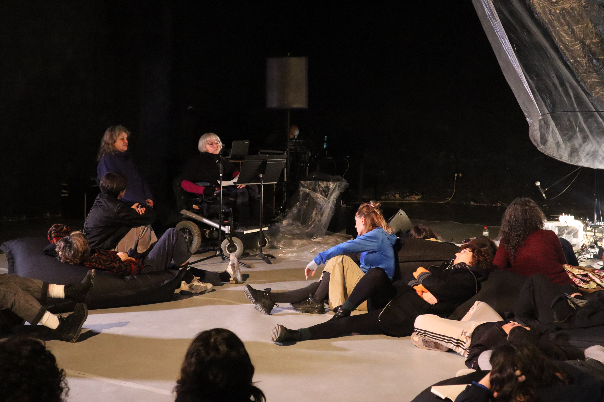
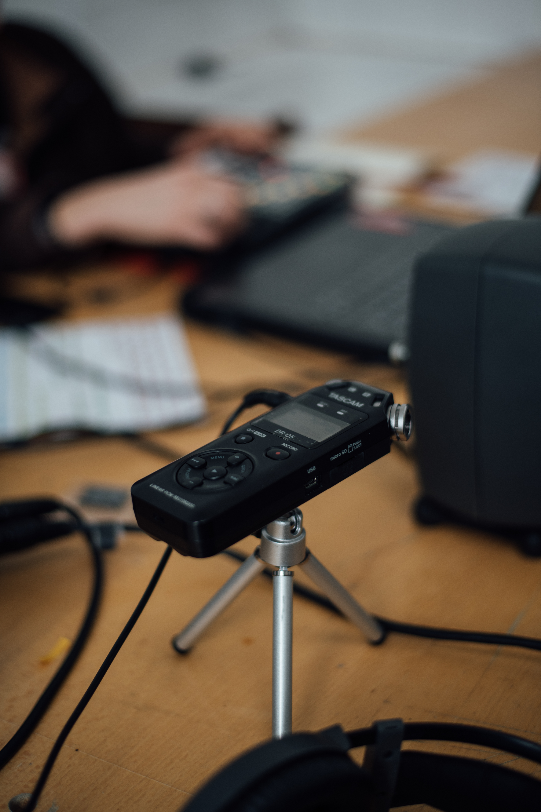
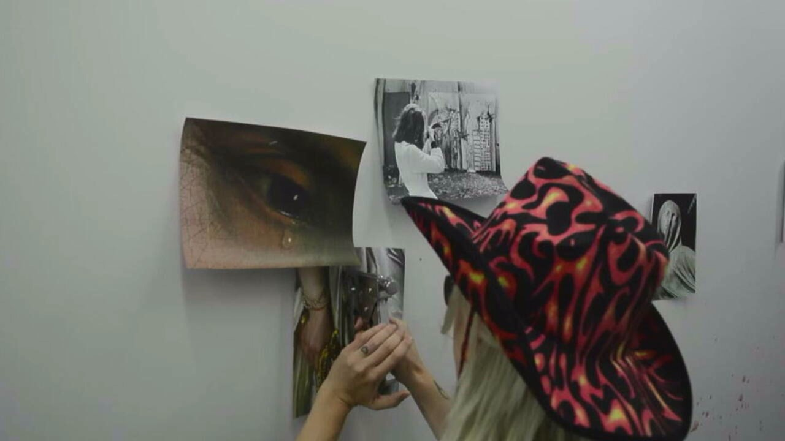
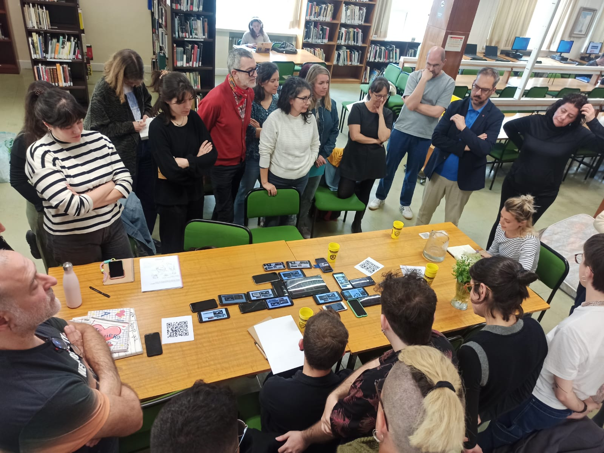

La poética del agua, un experimento sonoro
Irene Mahugo, Romina Casile y Tzu-Han Hung
Podcast en Radio Experimenta (ReX)
La Casa Encendida, Madrid, 2026
Artista escenógrafa e investigadora predoctoral
Soy investigadora predoctoral en la Facultad de Bellas Artes de Cuenca (UCLM) y formo parte del grupo de investigación ARTEA. Desde 2022 desarrollo mi tesis doctoral como personal investigador en formación, en el marco del Plan Propio I+D+i, cofinanciado por el Fondo Social Europeo Plus (FSE+).
Mi investigación se sitúa en el cruce entre las artes vivas, la curaduría, la escritura y los estudios de la discapacidad, desde un compromiso con el activismo anticapacitista. Trabajo desde el propio cuerpo y en relación con otros cuerpos para explorar cómo la enfermedad, el trauma, la vulnerabilidad y la diferencia transforman nuestras formas de estar, participar y producir conocimiento.
A lo largo de estos años he ido reuniendo intuiciones, escrituras, movimientos, conversaciones y experiencias compartidas. Trabajo desde metodologías situadas, colaborativas y experimentales, generando espacios donde diferentes cuerpos, capacidades y formas de relación puedan encontrarse.
Artes vivas · curaduría · escritura · activismo anticapacitista

Irene Mahugo, Romina Casile y Tzu-Han Hung
Podcast en Radio Experimenta (ReX)
La Casa Encendida, Madrid, 2026

Irene Mahugo, Esther Rodríguez-Barbero y Tzu-Han Hung
Taller en el marco del II Seminario de Investigación Experimenta: Comunidades Soñantes
Facultad de Bellas Artes, UCLM, 2026

Exposición colectiva de artistas e investigadores residentes
Casa de Velázquez, Madrid
13 noviembre 2024 - 9 febrero 2025

Lectura performativa
Experimenta: I Seminario de investigación
Fundación Antonio Pérez, Cuenca, 2025

Irene Mahugo, Romina Casile y Tzu-Han Hung
I Congreso de Investigación en Prácticas Artísticas y Cultura Visual
Facultad de Bellas Artes, UCLM, 2024

Irene Mahugo, Romina Casile y Tzu-Han Hung
Acción Spring(t)
Facultad de Bellas Artes, UCM, 2024

Investigación curatorial y muestra pública
Casa de Velázquez, Madrid, 2024

Investigación curatorial y muestra pública
Hangar, Barcelona, 2024

Investigación curatorial y registro
Hangar y Casa de Velázquez, 2024

Lectura performativa
El Poder: Live-Theater der Spanischen Prostituierten, comisariado por el Colectivo Desgarradura
Proyecto realizado en el marco de las Ayudas INJUVE para la Creación Joven
Sala Amadís, Madrid, 2024

Lectura performativa
HACER TESIS/HACER UNIVERSIDAD. Encuentro para cuidar la práctica en la investigación en artes
Facultad de Bellas Artes, UCM, 2023
Listado de comunicaciones en congresos, ponencias y presentaciones.